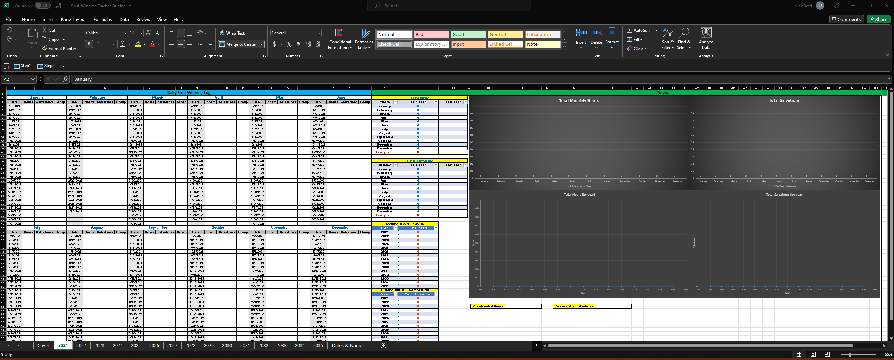

To
Top
ALL
THE
PREACHING
Home
Videos
Contact
Special Thanks To:
Everyone below for their inspiration and contribution of materials!
Pastor Steven Anderson of Faithful Word Baptist Church
,
Tempe, AZ
Pastor Roger Jimenez of Verity Baptist Church
,
Sacramento, CA
Pastor Jonathan Shelley of Stedfast Baptist Church
,
Hurst, TX
Pastor Dave Berzins of Stronghold Baptist Church
,
Norcross, GA
Pastor Aaron Thompson of Sure Foundation Baptist Church
,
Vancouver, WA
Pastor Jason Robinson of Mountain Baptist Church
,
Fairmont, WV
Pastor Bruce Mejia of First Works Baptist Church
,
El Monte, CA
Pastor Joe Jones of Shield of Faith Baptist Church
,
Boise, ID
Pastor Jared Pozarnsky Hold Fast Baptist Church
,
Fresno, CA
Pastor Kevin Sepulveda Blessed Hope Baptist Church & New Life Baptist Church
,
NSW, AU
Brother Matthew Stucky Verity Baptist Church
,
Manila, Philippines
Brother Kevin Roe of KevinKJV.com
Brother Thomas Coletto of BannedPreaching.com
Brother Paul Wittenberger of FramingTheWorld.com
Brother Ben Naim of BenTheBaptistKJV.com
Brother Matt Powell of MattPowellOfficial on Youtube
GodResource.com
Good Works Raiment
ServisFlameZone.org
All the supporters on Youtube. Keep on uploading!
soulwinning
tracking
→ track your dates hours & salvations throughout the years ←
download the spreadsheet now!
click here.
original credit & thanks to the creator of the youtube channel:
romans road

Contact
US
Send Us Your Questions & Comments!
admin@allthepreaching.com
www.allthepreaching.com
Please write your message and submit below.
(If you would like a reply back please leave an email in the message below.)
Thank you!